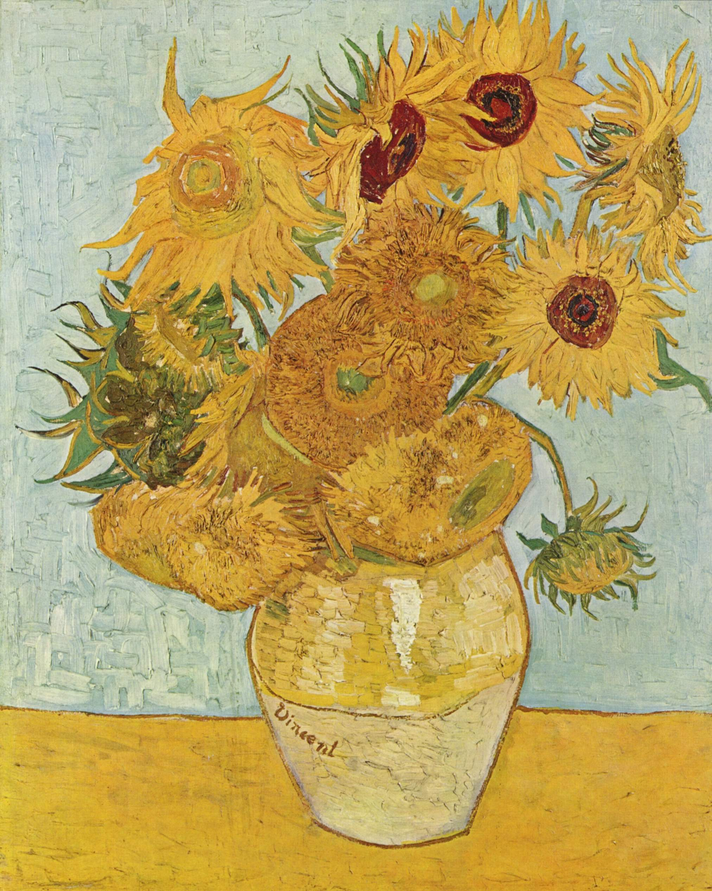

La Noche Estrellada
Ubicado en el Moma de Nueva York, fue pintado en junio de 1889, después de su episodio en Arles en el que se cortó parte de su propia oreja. Es una de sus pinturas más famosas y considerada como una de las mejores de Vicent Van Gogh y del mundo del arte, en general.


Girasoles
Otra de sus series más famosas es Girasoles, que pintó entre 1887 y 1888. Su primera serie representaba las flores tumbadas, mientras que la segunda serie representaba las flores en forma de ramo. Fueron un intento de impresionar a Paul Gauguin.

Autorretrato
Aunque se retrató en varias ocasiones el de 1889 es su autorretrato más famoso. Es probablemente el último que creó cuando se encontraba en el asilo de Saint-Rémy-de-Provence.

Terraza de café por la noche
Fue pintado en 1888 y es de las primeras obras que pintó en Arles. Por cierto, el café todavía existe y es toda una atracción turística.

En la puerta de la eternidad
En la puerta de la eternidad o Anciano Apenado es uno de sus cuadros más famosos (y hasta ha dado título a un biopic del pintor). Lo pintó solo dos meses antes de morir en plena recaída de su salud mental.

Autorretrato con oreja cortada
Es una pintura al óleo creada por Vincent van Gogh en 1889. Es un autorretrato muy conocido y representa al artista con una venda en la oreja izquierda. Van Gogh se cortó la oreja después de una discusión con su amigo y colega, el pintor Paul Gauguin.

El retrato del doctor Gachet
Fue pintado poco después de que Van Gogh abandonara el manicomio de Saint-Rémy-de-Provence. Gachet fue un médico que cuidó de Van Gogh.

Los comedores de patatas
Pintado en 1885 es una de sus primeras obras y retrata a una familia campesina comiendo. Es una de las obras maestras del artista y se encuentra en el Museo Van Gogh de Ámsterdam.

Lirios
Una de las etapas del arte de Vicent van Gogh esta marcada por la interpretación del mundo floral. En 1889 el artista se dedicó a pintar una serie de lirios en el asilo de Saint Paul-de-Mausole en Saint-Rémy-de-Provence, en el que estaba recluido. Esta pintura se puede ver en el Museo J. Paul Getty, de Los Ángeles.

Almendro en flor
Otro de sus cuadros más famosos fue pintado en 1890. Se lo dedicó a su recién nacido sobrino, por eso tenía un tono más positivo que el resto, y estaba inspirado en el arte japonés.

Noche estrellada sobre el ródano
Pintado en 1888 se encuentra en el Museo de Orsay de París. Representa Arles de noche a la orilla del río, cerca de la casa amarilla en la que vivía en ese momento.

El dormitorio de Arlés
Se trata de tres cuadros pintados en el mismo año que solo se diferencian por los motivos de la parte derecha. Los tres cuadros están en el Museo Van Gogh, el Instituto de Arte de Ámsterdam de Chicago y el Musee D'Orsay de París.

Museo Pushkin
Fue una de las pocas obras que el pintor consiguió vender a lo largo de su vida, aunque no la única. Se exhibió por primera vez en 1890 y fue vendido por 400 francos (710 € actuales) a Anna Boch, una pintora impresionista.

La cosecha
Es un cuadro al óleo del artista Vincent van Gogh, pintado en 1888. Muestra una escena de trabajadores rurales cosechando en un campo de trigo, con un gran árbol al fondo y un cielo azul brillante.

Trigal verde con ciprés
Pintada en 1889 muestra una vez más su obsesión con los terrenos alrededor del asilo en el que se encontraba en esta etapa de su vida.

La Siesta
Es un cuadro de Vincent van Gogh pintado en 1889 durante su estancia en el Hospital Psiquiátrico Saint-Paul-de-Mausole en Saint-Rémy-de-Provence (Francia). El cuadro representa a un hombre con sombrero durmiendo bajo un árbol en un campo. La obra cuenta con una paleta de colores brillantes en tonos verdes y azules en el césped y un tono naranja cálido en el suelo debajo del árbol.

Autorretrato con sombrero de fieltro
Es una pintura al óleo realizada por Vincent van Gogh en 1887. En la obra, el artista se retrata a sí mismo con un sombrero de fieltro marrón y un abrigo verde oscuro. La pintura se caracteriza por el uso de pinceladas gruesas y visibles, típicas del estilo posimpresionismo de van Gogh.

La iglesia de Auvers-Sur-Ois
Es una obra de Vincent van Gogh pintada en 1890 durante los últimos meses de su vida. Se encuentra en la colección del Museo de Orsay en París. La pintura representa la iglesia de Nuestra Señora de la Asunción en Auvers-sur-Oise, una pequeña ciudad al norte de París donde Van Gogh pasó los últimos días de su vida.

Campo de trigo con segador
Es una pintura al óleo realizada por Vincent van Gogh en 1889 durante su estancia en el hospital psiquiátrico de Saint-Paul-de-Mausole, en el sur de Francia. La pintura representa un paisaje rural con un hombre segando trigo en primer plano, mientras que en segundo plano se puede apreciar un campo de trigo amarillo y un cielo azul claro con nubes blancas.

Pescadores en la playa de Les Saintes-Maries-De-La-Mer
Es un cuadro de Vincent van Gogh pintado en 1888. Representa a varios pescadores trabajando en la playa de Les Saintes-Maries-de-la-Mer, en el sur de Francia.

El Sembrador
Es el nombre dado a una serie de pinturas de Vincent van Gogh que representan a un campesino sembrando semillas en un campo. Van Gogh realizó varias versiones de esta obra, con algunas diferencias en el color y la composición.

La Silla
"La silla" es una serie de cuadros famosos pintados por Vincent van Gogh en 1888 y 1889. Van Gogh creó varias obras que representan una silla de madera simple con una imagen distintiva y reconocible. En estas pinturas, exploró la representación de objetos cotidianos y su capacidad para transmitir emociones y estados de ánimo.

El pintor de camino a Tarascón
Es un retrato del artista postimpresionista Vincent van Gogh, pintado por él mismo en 1888, durante su prolífico periodo en Arles, Francia. Reafirma en él su identidad su pasión por la pintura y por plasmar la naturaleza.

Puente de Langlois
Este cuadro fue pintado por Van Gogh en 1888 durante su estancia en Arles, Francia. El puente retratado en la pintura es el Puente de Langlois, que cruzaba el río Ródano. En esta obra, van Gogh captura la belleza y serenidad del paisaje, representando el puente en primer plano con un camino que se extiende hacia el horizonte.

Jarrón con Lirios
En esta pintura, van Gogh representa un ramo de lirios en un jarrón. Utiliza una paleta de colores vibrantes y contrastantes, con tonos intensos de amarillo, verde y azul, que resaltan la belleza y la vitalidad de las flores. Van Gogh aplica pinceladas enérgicas y texturizadas, creando un efecto casi escultórico en la superficie del lienzo.

La Mousmé
Esta pintura fue creada en 1888 durante su estancia en Arles, Francia. La obra retrata a una joven mousmé, que es un término utilizado para referirse a una joven japonesa. En La Mousmé, Van Gogh representa a la figura en un traje tradicional japonés y con una expresión serena. Utiliza colores vibrantes y pinceladas expresivas para capturar la belleza y la delicadeza de la joven.

Retrato de Joseph Roulin
Joseph Roulin trabajaba como jefe de correos en la estación de Arles y van Gogh acudía allí con frecuencia para enviarle cuadros y cartas a su hermano Theo, que se encontraba en los Países Bajos.

La casa amarilla
Pintado en 1888 representa la casa que Van Gogh estaba alquilando en Arles. Paul Gauguin se hospedó en ella en 1888. La casa fue bombardeada durante la Segunda Guerra Mundial y fue demolida.

Trigal con cuervos
Pintado en 1890, actualmente se ubica en el Museo Van Gogh. Fue pintado el mismo mes que se suicidó por lo que podría ser la última que hizo, aunque no hay certeza al respecto.

Granja en provenza
Es un cuadro al óleo pintado por Vincent van Gogh en 1888. El cuadro muestra una vista de una granja con un granero, árboles y montañas en el fondo. Fue pintado durante el tiempo que van Gogh pasó en Arles, en el sur de Francia, donde estaba experimentando con el uso del color y la luz.

Noche estrellada sobre el ródano
Fue pintado por Vincent van Gogh en 1887 durante su estancia en París. Es una de las varias naturalezas muertas que van Gogh pintó durante ese período, en el que experimentó con diferentes estilos y técnicas de pintura. La elección de las frutas no fue accidental, ya que van Gogh tenía una gran admiración por la naturaleza y su simbolismo. Las uvas, por ejemplo, simbolizan la vida y la muerte, mientras que las manzanas representan la tentación y el conocimiento.